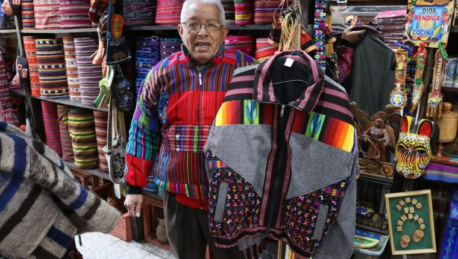
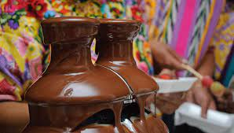

Guatemala tiene una variedad abrumadora de artesanías en su mayoría tejidos y telas especialmente de las tierras altas en un arcoíris de colores. Los artesanos en su mayoría Indígenas también trabajan en otros medios como la terracota y loza lacada (en particular, de Chinautla). Generación tras generación, familias, desde el más joven hasta el más anciano, trabajan en estilo de sus antepasados creando abundante productos que ahora podemos experimentar en el mundo entero. Porque su arte es una expresión de cultura de su pueblo, cada pieza (se hizo de piedra, madera o tela) es un trabajo individual de arte impreso con el alma del creador. Entre las artesanías más sobresalientes están los tejidos textiles, cerámica, jarcia, carpintería, la fabricación de velas, cuero, jícaras, jade, hierro Forjado, cestería. Artesanías en Madera,Cestería,Jarcia,Cerámica Mayólica .

